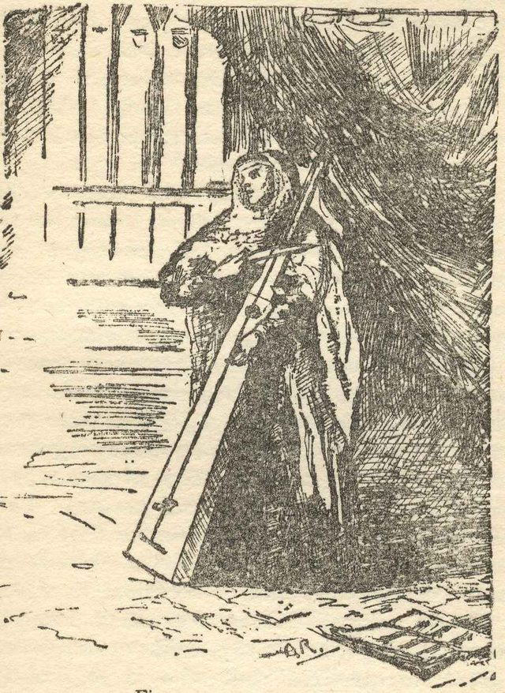

Home / Living Traditions / Northern and Eastern Europe
Playable heritage gameTromba marina
The tromba marina, or marine trumpet, is a bowed instrument of medieval and baroque Europe with one long string stretched over a tall, tapering wooden body that stands about as high as a person. The player does not press the string to a fingerboard. A fingertip rests lightly on it at points where it divides evenly, bringing out the bright natural notes, while one foot of the bridge buzzes against the soundboard to give the sound of a trumpet.


How to play
- One long string runs the whole length of the body. Each lane marks a point where it is touched lightly, the lowest note first.
- A bead slides down the string to the point. Touch and bow as it lands.
- The notes are the natural series, so the steps get smaller as you rise.
- Learn the phrase by echo, then play it through with the pulse.
Rules at a glance
- The notes are the natural series of one string, from the open string to the eighth partial.
- A stroke on the beat is perfect, a near one is good, and extra strokes cost points.
- Each figure runs through twice.
- Figures are written for this game in the style of the tradition.
About the tradition
The tromba marina was played in European towns and courts from the fifteenth to the eighteenth century. The single long string, the tall tapering body and the buzzing bridge foot that gives its trumpet voice are its signature.
Origins
A living tradition passed from person to person; it is not tied to a single dated origin. It belongs to the cultural world of Northern and Eastern Europe.
Credits
- Tradition: the tromba marina; figures written for this game
- Photo: Unknown author (public domain), PD-US, source on Wikimedia Commons
- Text: CC BY-SA 4.0, World Heritage Games.
Sources

Get the app
Tromba marina is one of 6 folk string instruments in the Folk Strings of the World app for Android. Submitted to Google Play; in review. Store links appear here the day it goes live. One app, many traditions, no account needed.
More games to play

String Marionette Theatre
Czechia · Performance and storytellingPlay preview · in the Story & Theatre of the World app


Gusle Bow and Verse
Serbia +2 · Musical instrumentsPlay preview · in the Folk Strings of the World app

More from Germany

Alpine Yodel
Switzerland +2 · Archery, throwing and target gamesPlay preview · in the Wind & Voice of the World app
Black Forest Cuckoo Clock Workshop
Germany · Crafts and making
Blacksmith's Forge
United Kingdom +4 · Crafts and makingPlay preview · in the Woodcraft & Metal of the World app